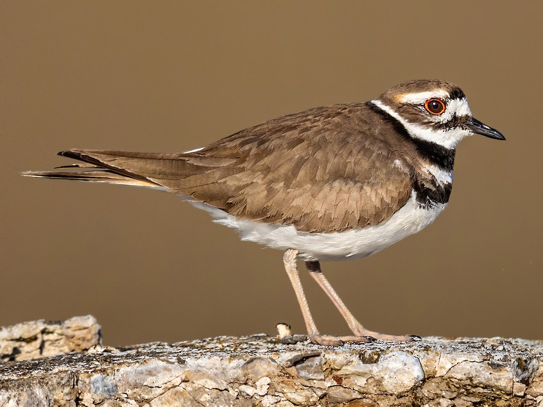
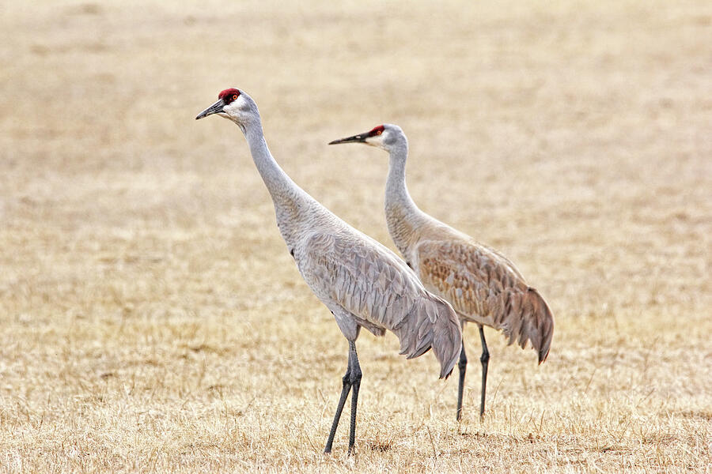

A brief look at some of my favorite birds of Montana
The Killdeer, Harlequin Duck and Sandhill Crane are three of my favorite birds in Montana because each one represents a different part of the state’s natural beauty.
I love the Killdeer because I find them to be an interesting and, quite frankly, a funny bird. Killdeer lay their eggs in open areas and will pretend to have a broken wing to distract predators from their eggs.
The Harlequin Duck is also one of my favorite birds because of its distinctive coloring. Lastly, Sandhill Cranes are another of my favorites because of their impressive size, graceful movements, and the unique call they make which can be heard from miles away.
Together, these three birds remind me of the variety of landscapes and wildlife that make Montana such a special place.

Killdeer
Killdeer lay their eggs in open areas and will often pretend to have a broken wing to distract predators from their eggs.
Harlequin Duck
You can find these birds along mountain streams anywhere between April and September.

Sandhill Crane
These birds are an impressive size. They can range from 3 to 4 feet tall and have a wingspan of up to 7 feet.